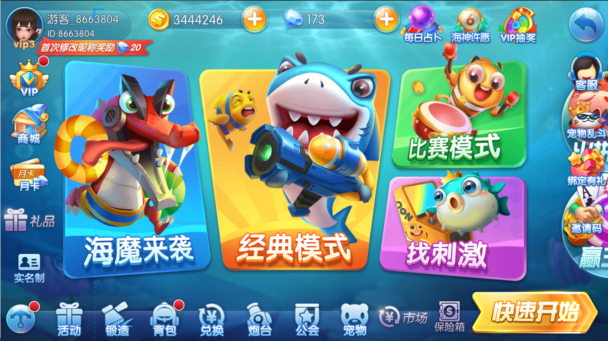
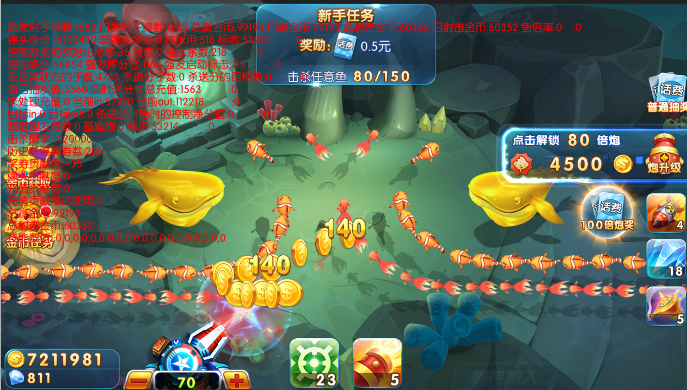
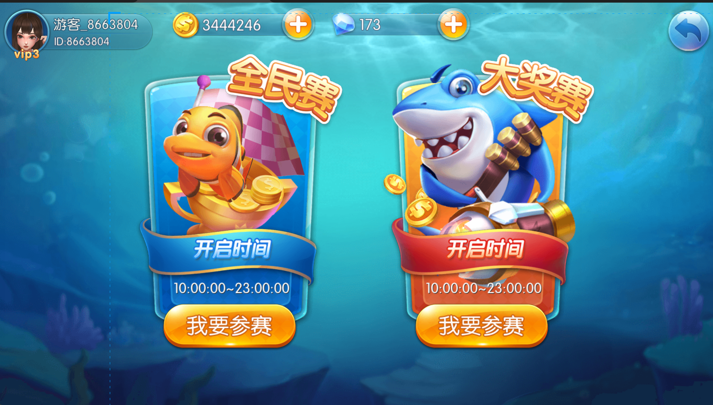
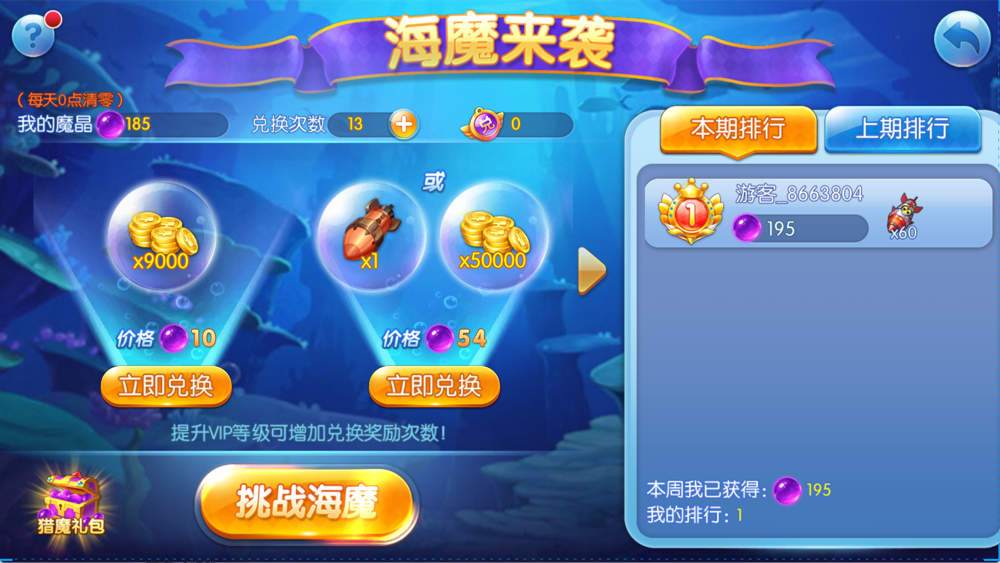
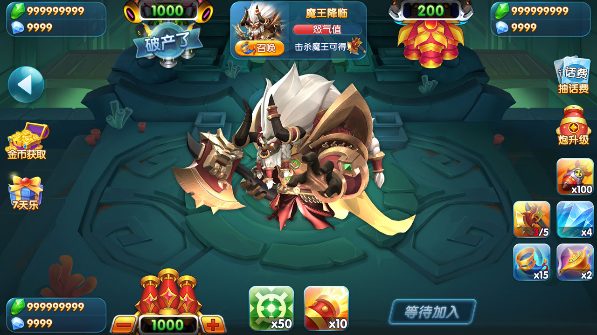
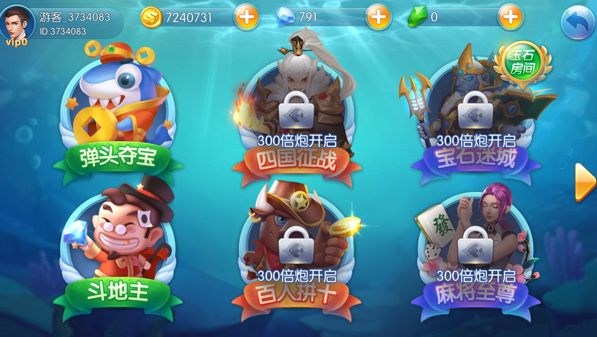

Sea Demon Assault
Themed stages and ocean event encounters.
Lua / Python / C++ / Node.js
Arcade fishing product material with a partial Lua client archive and runnable Python, C++, Node.js, database and test scaffolds.
View repository捕鱼产品资料、Lua 客户端模块与多语言后端基础脚手架
Game content
Themed stages and ocean event encounters.
Kraken Vortex, Rookie Beach, Deep-Sea Giants and Ghost Captain.
Competition rooms, points, ranking and multiplayer event flows.
Undead Ruins and Celestial Palace Clash environments.
Authentic product views






Full-stack architecture
Actual deployment dependencies, databases and middleware must be verified from the delivered source and environment documentation.
Verified public scope
The public tree includes friends/login/settings Lua modules, a FastAPI gateway scaffold, a C++17 room-engine example, a Node.js operations API, database examples and tests. It is not yet a cleanly rebuildable complete historical product. Commercial delivery, assets, deployment, support and territory must be confirmed in writing.
Review the architecture · Review deployment requirements
Telegram: @xuzongbin001
Email: masterai918@gmail.com